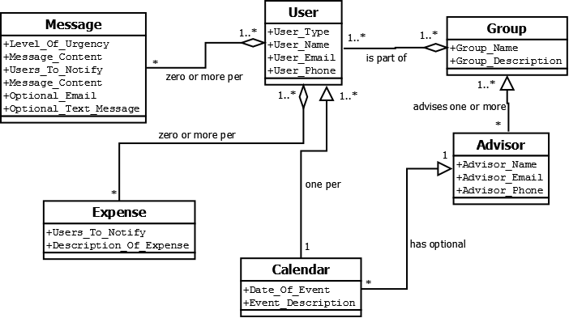

Groups: Can have multiple subgroups
Lee's Class Diagram
Groups: Can have multiple subgroups
User List: Contains information about users who are a member of a group. This could either be one user list or multiple for any sub-groups.
User: Any member of the group. They can lookup who is in the group and send emails to the group.
Group Owner: Owner of the group. Can perform administrative tasks such as adding or removing a user from a group's user list
Officer: Special type of group owner that can view any private data from the user list along with anything that a group owner and User to do.
Advisor: Faculty member to the organization who has the same abilities as a user.
Requirements that I found from the ACM: The ACM's major requirement is in regards to book keeping. Being able to have a mechanism to keep track of members information such as a user list. More specifically there will need to be able to add different entries to this rather than being constrained to a certain set of values. Likely entries include, but should not be limited to: Name, Email address, Membership status, and UserID.
I pulled information from my own experience as an ACM officer (VP) as well as from fellow and past officers .
Zeke's Class Diagram

Group: There is at least one user per group, and zero or more advisors.
User: Contains information about users who are a member of a group. This information includes the user name, whether the user is an officer (and what their title is) and contact information.
Message: Each member of the group can have zero or more messages, and depending on the urgency of the message, the user may or may not be sent an e-mail or phone text message.
Expense: Whenever the group has an expense, an officer of the group can send expense notifications to all members that the expense applies to.
Calendar: Each member of the group has one calendar, and the group advisor has the choice whether or not to have a calendar.
Advisor: Faculty member to the organization who has the same abilities as a user.
Background information regarding TALuS:
The name stands for "Trio Alumni Society". It is a group of
first-generation graduates from low-income families.
Requirements that I found from TALuS:
Their major requirement is the need for urgent messages to be sent effectively. They currently communicate
through text messages and Facebook, and the VP (Teara Lyons) noted that having text message notifications
and possibly automated Facebook notifications would be extremelyhelpful.
My information came from an interview with Teara Lyons, the VP of TALuS.